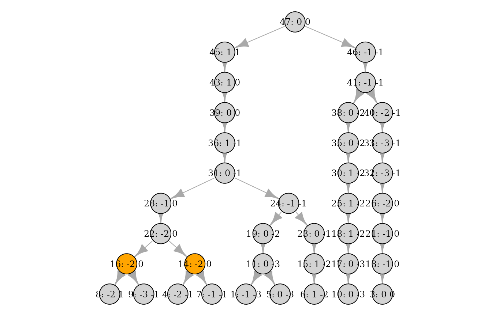
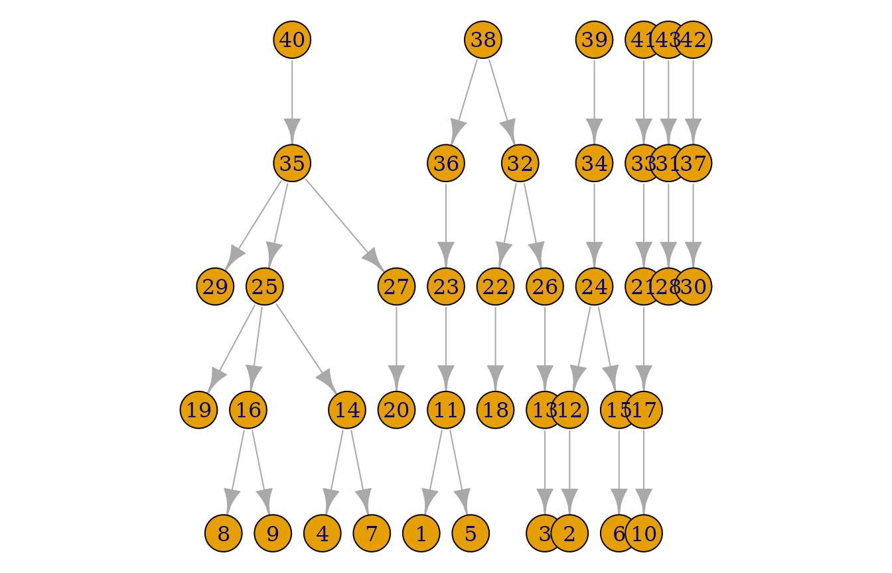

Introduction
Mikkel Meyer Andersen
28 november, 2023
Source:vignettes/introduction.Rmd
introduction.RmdFirst, the library is loaded:
library(malan)For reproducibility, the seed for the (pseudo) random number generator is set:
set.seed(1)Population simulation
A standard Wright-Fisher population can be simulated (hiding progress information) as follows:
sim_res <- sample_geneology(population_size = 10, generations = 10, progress = FALSE)Building the pedigrees
Until pedigrees are built/inferred, there is not much information available (e.g. about children). So let us infer the pedigrees:
pedigrees <- build_pedigrees(sim_res$population, progress = FALSE)
pedigrees## List of 2 pedigrees (of size 38, 10)
pedigrees_count(pedigrees)## [1] 2
pedigrees_table(pedigrees)## 10 38
## 1 1
pedigree_size(pedigrees[[1]])## [1] 38
pedigree_size(pedigrees[[2]])## [1] 10
#pedigree_size(pedigrees[[3]]) # error as there are only 2 pedigreesThe pedigrees can be plotted all at once:
plot(pedigrees)
Or just one at a time:
plot(pedigrees[[1]])
plot(pedigrees[[2]])Some information about the population can be obtained. For example, the individuals in the final generation can be saved:
str(sim_res, 1)## List of 7
## $ population :Classes 'malan_population', 'externalptr' <externalptr>
## $ generations : num 10
## $ founders : int 2
## $ growth_type : chr "ConstantPopulationSize"
## $ sdo_type : chr "StandardWF"
## $ end_generation_individuals:List of 10
## $ individuals_generations :List of 23
## - attr(*, "class")= chr [1:2] "malan_simulation" "list"
live_individuals <- sim_res$end_generation_individualsAnd a live individual is printed:
print_individual(live_individuals[[1]])## pid = 1 with father pid = 11 and no childrenWe can also print another individual (from the entire population):
indv <- get_individual(sim_res$population, 22)
print_individual(indv)## pid = 22 with father pid = 28 and children (n = 2):
## pid = 16 with father pid = 28 and 2 children
## pid = 14 with father pid = 28 and 2 childrenRun a mutation process
set.seed(1)
mutrts <- c(0.5, 0.5)
pedigrees_all_populate_haplotypes(pedigrees = pedigrees,
loci = length(mutrts),
mutation_rates = mutrts, progress = FALSE)Individual pedigrees can now be plotted with haplotype information:
plot(pedigrees[[1]], haplotypes = TRUE)And the individual id can be removed to only display the haplotype:
plot(pedigrees[[1]], ids = FALSE, haplotypes = TRUE)
And one or more individuals can be marked/highlighted:

More than 1 full generation
By standard, only the last generation contains \(N\) individuals. If the 3 last generations
should be full, this can be done by specifying
generations_full = 3 as follows:
set.seed(1)
sim_res <- sample_geneology(population_size = 10,
generations = 5,
generations_full = 3,
progress = FALSE)
pedigrees <- build_pedigrees(sim_res$population, progress = FALSE)
plot(pedigrees)
And to obtain the complete history, generations_full is
set to generations:
set.seed(1)
sim_res <- sample_geneology(population_size = 10,
generations = 5,
generations_full = 5,
progress = FALSE)
pedigrees <- build_pedigrees(sim_res$population, progress = FALSE)
plot(pedigrees)
Now, there are 10 individuals in all generations.
Simulate to one founder
By standard, the number of generations are specified. Instead, it can
be specified to continue simulating until one common founder is reached
by specifying generations = -1:
set.seed(1)
sim_res <- sample_geneology(population_size = 10,
generations = -1,
progress = FALSE)
pedigrees <- build_pedigrees(sim_res$population, progress = FALSE)
plot(pedigrees)
The number of generations needed can be obtained as follows:
sim_res$generations## [1] 15Counting matches
Simulating the population
Let’s try to simulate a larger population with 3 full generations
(the additional generations_return is to get all
individuals in the last 3 generations returned in the
individuals_generations slot, cf. below):
set.seed(1)
sim_res <- sample_geneology(population_size = 1e3,
generations = 200,
generations_full = 3,
generations_return = 3, # default value
progress = FALSE)And build the pedigrees:
pedigrees <- build_pedigrees(sim_res$population, progress = FALSE)
pedigrees_table(pedigrees)## 311 736 2464 407 758 1421 2565 2740
## 1 1 1 1 1 1 1 1
pedigrees_count(pedigrees)## [1] 8So there are 8 pedigrees. Let’s try to plot the largest one:
ped_sizes <- sapply(1L:pedigrees_count(pedigrees), function(i) pedigree_size(pedigrees[[i]]))
ped_sizes## [1] 2740 2565 2464 1421 758 736 407 311
And the impose mutations from a 20 locus haplotype with mutation rate 0.001 per locus:
set.seed(10)
mutrts <- rep(0.001, 20)
pedigrees_all_populate_haplotypes(pedigrees = pedigrees,
loci = length(mutrts),
mutation_rates = mutrts, progress = FALSE)The haplotypes at the live individuals (3 generations) can be inspected:
live_individuals <- sim_res$individuals_generations
length(live_individuals)## [1] 3000
haps <- get_haplotypes_individuals(individuals = live_individuals)
head(haps)## [,1] [,2] [,3] [,4] [,5] [,6] [,7] [,8] [,9] [,10] [,11] [,12] [,13] [,14]
## [1,] 0 0 0 0 -1 -1 0 0 0 1 1 0 0 0
## [2,] 0 0 0 0 -1 0 0 0 -1 0 -1 0 0 0
## [3,] 0 0 0 0 0 0 0 0 0 0 0 0 0 0
## [4,] 0 0 0 0 0 0 0 0 0 0 0 1 0 0
## [5,] 0 0 0 0 0 0 0 0 0 0 0 0 0 2
## [6,] 0 -1 0 -1 0 0 0 0 -1 0 0 1 0 0
## [,15] [,16] [,17] [,18] [,19] [,20]
## [1,] 0 0 0 0 0 0
## [2,] 0 0 0 0 0 0
## [3,] 0 0 0 0 0 0
## [4,] 0 0 0 0 0 0
## [5,] 0 0 0 0 0 -1
## [6,] 1 0 0 0 0 0Lets look at the spectrum:
haps_str <- apply(haps, 1, paste0, collapse = ";")
haps_tab <- table(haps_str)
sort(haps_tab, decreasing = TRUE)[1:10]## haps_str
## 0;0;-1;0;0;0;0;0;0;0;0;0;0;0;-1;0;0;0;0;0
## 215
## 0;0;0;0;-1;0;0;0;0;1;1;0;0;0;0;0;0;0;0;0
## 164
## 0;0;-1;0;0;0;0;0;0;-1;-1;0;0;0;0;-1;0;0;0;0
## 152
## 1;1;0;0;0;0;0;0;0;1;0;0;0;-1;0;0;0;0;0;0
## 126
## 0;0;0;0;0;0;0;0;0;0;0;0;0;0;0;0;0;0;0;0
## 112
## 0;0;0;0;0;0;0;0;0;0;0;1;0;0;0;0;0;0;0;0
## 111
## 0;0;0;0;0;0;0;0;0;0;0;0;0;2;0;0;0;0;0;-1
## 92
## 0;0;0;0;0;0;0;-1;0;-2;0;0;0;0;0;0;0;0;0;0
## 90
## 0;0;0;0;-1;0;0;0;-1;0;-1;0;0;0;0;0;0;0;0;0
## 82
## 0;0;0;0;0;0;0;0;-1;0;0;0;0;0;-1;0;0;0;0;0
## 80
spectrum <- table(haps_tab)
spectrum## haps_tab
## 1 2 3 4 5 6 7 8 9 10 11 12 13 14 15 16 17 18 19 20
## 37 19 9 13 11 3 2 5 3 3 2 3 2 6 1 2 2 4 1 1
## 21 22 23 24 29 30 32 33 35 40 41 42 43 46 52 54 58 59 60 74
## 2 4 1 1 3 1 1 2 1 2 1 2 1 1 1 1 1 1 1 1
## 80 82 90 92 111 112 126 152 164 215
## 1 1 1 1 1 1 1 1 1 1Drawing an individual and counting matches
set.seed(100)
Q_index <- sample.int(n = length(live_individuals), size = 1)
Q <- live_individuals[[Q_index]]
Q_hap <- get_haplotype(Q)
Q_hap## [1] 0 0 0 0 -1 0 0 0 -1 0 -1 0 0 0 0 0 0 0 0 0First, identify \(Q\)’s pedigree:
Q_ped <- get_pedigree_from_individual(Q)Now, count matches in pedigree and in live population:
count_haplotype_occurrences_pedigree(pedigree = Q_ped, haplotype = Q_hap, generation_upper_bound_in_result = 2)## [1] 82
count_haplotype_occurrences_individuals(individuals = live_individuals, haplotype = Q_hap)## [1] 82We can also inspect pedigree matches information about number of meioses and \(L_1\) distances:
path_details <- pedigree_haplotype_matches_in_pedigree_meiosis_L1_dists(suspect = Q,
generation_upper_bound_in_result = 2)
nrow(path_details)## [1] 82
head(path_details)## meioses max_L1 pid
## [1,] 8 0 2697
## [2,] 8 0 2299
## [3,] 9 0 1780
## [4,] 8 0 2119
## [5,] 9 0 1687
## [6,] 9 0 1544Look at the distribution of number of meioses between \(Q\) and the matches (there are 0 meioses between Q and himself):
meioses <- path_details[, 1]
hist(meioses)
On the path between \(Q\) and the match, the maximum \(L_1\) difference between \(Q\)’s haplotype and the haplotypes of the individuals on the path is recorded (0 means that that no mutations have occured on the path between \(Q\) and the match):
L1_max <- path_details[, 2]
table(L1_max)## L1_max
## 0
## 82
mean(L1_max == 0)## [1] 1Mixtures
Draw true contributors:
set.seed(100)
U_indices <- sample.int(n = length(live_individuals), size = 2, replace = FALSE)
U1 <- live_individuals[[U_indices[1]]]
U2 <- live_individuals[[U_indices[2]]]
H1 <- get_haplotype(U1)
H2 <- get_haplotype(U2)View haplotypes:
rbind(H1, H2)## [,1] [,2] [,3] [,4] [,5] [,6] [,7] [,8] [,9] [,10] [,11] [,12] [,13] [,14]
## H1 0 0 0 0 -1 0 0 0 -1 0 -1 0 0 0
## H2 0 -1 0 -1 0 0 0 0 -1 0 0 1 0 0
## [,15] [,16] [,17] [,18] [,19] [,20]
## H1 0 0 0 0 0 0
## H2 1 0 0 0 0 0Now, find those haplotype in live individuals (those haplotypes are
in haps from before) that are included in (or compatible
with) the mixture:
#mixres <- indices_in_mixture_by_haplotype_matrix(haplotypes = haps, H1 = H1, H2 = H2)
mixres <- mixture_info_by_individuals_2pers(live_individuals, U1, U2)
str(mixres, 1)## List of 13
## $ pids_included_in_mixture : int [1:293] 2 6 20 38 41 52 59 72 77 79 ...
## $ pids_included_in_mixture_info:List of 293
## $ pids_matching_donor1 : int [1:82] 2 77 95 142 150 168 236 237 251 259 ...
## $ pids_matching_donor2 : int [1:40] 6 20 38 79 147 321 729 761 802 1006 ...
## $ pids_others_included : int [1:171] 41 52 59 72 124 282 294 308 311 313 ...
## $ pids_donor12_meiotic_dist : int -1
## $ donor1_family_info :List of 5
## $ donor2_family_info :List of 5
## $ donor1_profile : int [1:20] 0 0 0 0 -1 0 0 0 -1 0 ...
## $ donor2_profile : int [1:20] 0 -1 0 -1 0 0 0 0 -1 0 ...
## $ donor1_pid : int 503
## $ donor2_pid : int 2035
## $ loci_not_matching : num 6Compare with matches:
length(mixres$pids_matching_donor1)## [1] 82
count_haplotype_occurrences_individuals(individuals = live_individuals, haplotype = H1)## [1] 82
length(mixres$pids_matching_donor2)## [1] 40
count_haplotype_occurrences_individuals(individuals = live_individuals, haplotype = H2)## [1] 40In mixture that are not H1 and not H2:
length(mixres$pids_others_included)## [1] 171Inspect these (only unique ones):
others_haps <- get_haplotypes_pids(sim_res$population, mixres$pids_others_included)
others_haps <- others_haps[!duplicated(others_haps), ]
others_haps## [,1] [,2] [,3] [,4] [,5] [,6] [,7] [,8] [,9] [,10] [,11] [,12] [,13] [,14]
## [1,] 0 0 0 -1 0 0 0 0 -1 0 0 0 0 0
## [2,] 0 0 0 0 0 0 0 0 -1 0 0 0 0 0
## [3,] 0 0 0 -1 0 0 0 0 -1 0 0 1 0 0
## [4,] 0 0 0 -1 -1 0 0 0 -1 0 0 0 0 0
## [,15] [,16] [,17] [,18] [,19] [,20]
## [1,] 0 0 0 0 0 0
## [2,] 0 0 0 0 0 0
## [3,] 1 0 0 0 0 0
## [4,] 0 0 0 0 0 0And get their population counts:
others_haps_counts <- unlist(lapply(seq_len(nrow(others_haps)), function(hap_i) {
count_haplotype_occurrences_individuals(individuals = live_individuals,
haplotype = others_haps[hap_i, ])
}))
sum(others_haps_counts)## [1] 171
length(mixres$pids_others_included)## [1] 171Compare with profiles of true contributors:
rbind(H1, H2)## [,1] [,2] [,3] [,4] [,5] [,6] [,7] [,8] [,9] [,10] [,11] [,12] [,13] [,14]
## H1 0 0 0 0 -1 0 0 0 -1 0 -1 0 0 0
## H2 0 -1 0 -1 0 0 0 0 -1 0 0 1 0 0
## [,15] [,16] [,17] [,18] [,19] [,20]
## H1 0 0 0 0 0 0
## H2 1 0 0 0 0 0Other functions
Variance in number of children
Let \(\alpha\) be the parameter of a symmetric Dirichlet distribution specifying each man’s probability to be the father of an arbitrary male in the next generation. When \(\alpha=5\), a man’s relative probability to be the father has 95% probability to lie between 0.32 and 2.05, compared with a constant 1 under the standard Wright-Fisher model and the standard deviation in the number of male offspring per man is 1.10 (standard Wright-Fisher = 1).
This symmetric Dirichlet distribution is implemented by drawing
father (unscaled) probabilities from a Gamma distribution with
parameters shape and scale that are then normalised to sum to 1. To
obtain a symmetric Dirichlet distribution with parameter \(\alpha\), the shape must be \(\alpha\) and scale \(1/\alpha\). This is simulated as follows
(note the enable_gamma_variance_extension parameter):
dirichlet_alpha <- 5
set.seed(1)
sim_res <- sample_geneology(population_size = 10,
generations = 10,
enable_gamma_variance_extension = TRUE,
gamma_parameter_shape = dirichlet_alpha,
gamma_parameter_scale = 1 / dirichlet_alpha,
progress = FALSE)
pedigrees <- build_pedigrees(sim_res$population, progress = FALSE)
plot(pedigrees)
Let us verify the claim that the standard deviation in the number of
male offspring per man is 1.10. The easiest way is to get information
about father id’s, which is done by asking for a
verbose_result:
N <- 1000
set.seed(1)
sim_res <- sample_geneology(population_size = N,
generations = 2,
enable_gamma_variance_extension = TRUE,
gamma_parameter_shape = dirichlet_alpha,
gamma_parameter_scale = 1/dirichlet_alpha,
progress = FALSE, verbose_result = TRUE)
tbl_fathers_with_children <- table(sim_res$father_pids[, 1])
tbl_fathers_no_children <- rep(0, N - length(tbl_fathers_with_children))
number_of_children <- c(tbl_fathers_with_children, tbl_fathers_no_children)
number_of_children <- as.numeric(number_of_children)
mean(number_of_children)## [1] 1
sd(number_of_children)## [1] 1.11411Let os get estimates in parallel:
get_number_children <- function(N) {
sim_res <- sample_geneology(population_size = N,
generations = 2,
enable_gamma_variance_extension = TRUE,
gamma_parameter_shape = dirichlet_alpha,
gamma_parameter_scale = 1 / dirichlet_alpha,
progress = FALSE, verbose_result = TRUE)
tbl_fathers_with_children <- table(sim_res$father_pids[, 1])
tbl_fathers_no_children <- rep(0, N - length(tbl_fathers_with_children))
number_of_children <- c(tbl_fathers_with_children, tbl_fathers_no_children)
number_of_children <- as.numeric(number_of_children)
return(number_of_children)
}
library(parallel)
options(mc.cores = 2)
RNGkind("L'Ecuyer-CMRG") # for mclapply
set.seed(1)
x <- mclapply(1:100, function(i) get_number_children(100))
sds <- unlist(lapply(x, sd))
mean(sds)## [1] 1.100545Population growth
Population growth can be simulated by specifying the population size
at each generation by the population_sizes vector, where
the length thus specifies the number of generations:
set.seed(1)
sim_res_growth <- sample_geneology_varying_size(population_sizes = c(10, 20, 10),
generations_full = 3,
progress = FALSE)Note how generations_full was used to obtain all
individuals in the generations (and not just those with descendants in
the last two):
pedigrees_growth <- build_pedigrees(sim_res_growth$population, progress = FALSE)
plot(pedigrees_growth)